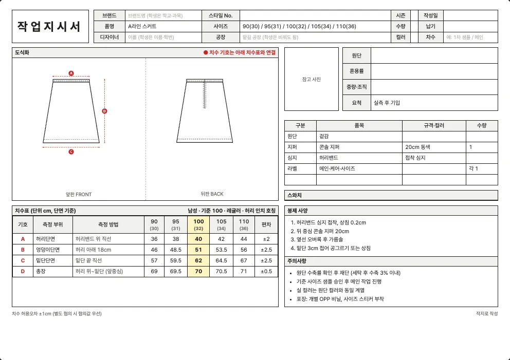

최종 수정 2026년 10월 10일 · 읽는 시간 약 4분
스커트 양식 내려받기
A라인, H라인(펜슬), 플리츠, 테니스, 미니, 머메이드, 랩 스커트에 쓰는 엑셀 작업지시서 양식입니다. 허리·엉덩이·밑단·총장 4곳을 적고, 허리 인치 호칭(예: 여성 66 = 28인치 안팎)을 함께 씁니다.
| 사이즈 체계 | 엑셀 파일 (.xlsx) |
|---|---|
| 남성 사이즈 (80~110) 허리 인치 호칭 함께 표기 | 남성 사이즈 (80~110) |
| 여성 사이즈 (44~88) 허리 인치 호칭 함께 표기 | 여성 사이즈 (44~88) |
| 영문 양식 (해외 공장용) | 남성 · 영문 여성 · 영문 |

스커트 작업지시서에서 꼭 챙길 것
- 모양에 따라 달라지는 밑단단면: 같은 허리와 엉덩이라도 H라인은 밑단이 좁고 플리츠와 머메이드는 넓어서 밑단단면이 크게 달라집니다. 이 양식의 밑단은 소분류 기준으로 맞춰져 있으니 모양을 바꾸면 값도 바꾸세요.
- 플리츠는 주름 수와 깊이: 플리츠 스커트는 주름 수, 주름 깊이, 눌러 박는 길이(스티칭 위치)를 적어야 합니다. 주름 때문에 허리에 들어가는 원단 길이가 훨씬 길어져 요척이 늘어납니다.
- 콘솔 지퍼: 뒤 중심 지퍼 길이(기본 20cm), 동색 여부, 훅·단추 위치를 적습니다. 지퍼가 없는 랩 스커트나 고무줄 허리는 이 항목을 지우세요.
- 허리밴드: 허리밴드 폭과 접착 심지, 안쪽 처리(고무줄 삽입, 트윌 테이프)를 적습니다. 허리가 들뜨는 불량은 심지와 밴드 폭에서 자주 나옵니다.
- 안감과 길이: 비치는 원단이면 안감(속치마)을 쓰는지, 안감 길이를 겉감보다 몇 cm 짧게 할지 적습니다. 총장은 허리선 기준인지 허리밴드 아래 기준인지도 밝혀야 합니다.
치수표 (양식에 들어 있는 기준값)
이 양식의 치수표는 4곳(허리단면, 엉덩이단면, 밑단단면, 총장)입니다. 기준(샘플) 사이즈는 100(남성)과 66(여성)이고, 단위는 cm이며 단면(납작하게 놓고 가로로 잰 길이) 기준입니다. 허리 인치 호칭은 허리단면×2÷2.54에 맞춘 참고값입니다.
남성 사이즈 (80~110)
| 기호 | 측정 부위 | 측정 방법 | 90(30) | 95(31) | 100(32) | 105(34) | 110(36) | 편차 |
|---|---|---|---|---|---|---|---|---|
| A | 허리단면 | 허리밴드 위 직선 | 36 | 38 | 40 | 42 | 44 | ±2 |
| B | 엉덩이단면 | 허리 아래 18cm | 46 | 48.5 | 51 | 53.5 | 56 | ±2.5 |
| C | 밑단단면 | 밑단 끝 직선 | 57 | 59.5 | 62 | 64.5 | 67 | ±2.5 |
| D | 총장 | 허리 위~밑단 (앞중심) | 69 | 69.5 | 70 | 70.5 | 71 | ±0.5 |
여성 사이즈 (44~88)
| 기호 | 측정 부위 | 측정 방법 | 44(24) | 55(26) | 66(28) | 77(30) | 88(32) | 편차 |
|---|---|---|---|---|---|---|---|---|
| A | 허리단면 | 허리밴드 위 직선 | 30.5 | 33 | 35.5 | 38 | 40.5 | ±2.5 |
| B | 엉덩이단면 | 허리 아래 18cm | 43 | 45.5 | 48 | 50.5 | 53 | ±2.5 |
| C | 밑단단면 | 밑단 끝 직선 | 53 | 55.5 | 58 | 60.5 | 63 | ±2.5 |
| D | 총장 | 허리 위~밑단 (앞중심) | 64 | 64.5 | 65 | 65.5 | 66 | ±0.5 |
‘측정 방법’ 칸은 어디에서 어디까지 재는지를 적은 것입니다. 공장과 재는 방법이 다르면 같은 숫자도 다른 옷이 됩니다. 일반적인 측정 위치는 치수 재는 법에 정리했습니다.
기본 부자재와 봉제 사양
| 부자재 | 기본 규격(예시) |
|---|---|
| 겉감 | — |
| 콘솔 지퍼 | 20cm 동색 |
| 허리밴드 | 접착 심지 |
| 메인·케어·사이즈 | — |
양식에는 아래 봉제 사양이 예시로 들어 있습니다. 내 옷에 맞게 고쳐 쓰세요.
- 허리밴드 심지 접착, 상침 0.2cm
- 뒤 중심 콘솔 지퍼 20cm
- 옆선 오버록 후 가름솔
- 밑단 3cm 접어 공그르기 또는 상침
원단 예시
스커트에 많이 쓰는 원단입니다.
| 원단 | 혼용률(예시) | 중량·조직(예시) |
|---|---|---|
| 포플린 | 면 100% | 포플린 평직 |
| 린넨 | 린넨 100% | 평직 (세탁 수축 주의) |
| 데님 12oz | 면 100% | 12oz 3/1 트윌 |
| 면 트윌 (치노) | 면 97% / 폴리우레탄 3% | 260g/㎡ 2/1 트윌 |
| 캔버스 10수 | 면 100% | 10수 평직 (약 340g/㎡) |
실제 혼용률과 중량은 구입한 원단의 스와치 라벨이나 공급처 자료로 확인해서 적어야 합니다. 원단 선택은 원단 고르는 법, 요척과 원가는 요척과 원가 계산을 참고하세요.
엑셀 양식과 작지 도구
엑셀 양식은 직접 쓰기 편하지만, 스커트의 소분류(A라인 스커트·H라인 (펜슬) 스커트·플리츠 롱스커트·테니스 스커트·미니 스커트·머메이드 스커트·랩 스커트)와 디테일에 맞는 도식화를 바꾸려면 그림을 직접 편집해야 합니다. 작지 도구에서는 소분류와 디테일을 고르면 도식화와 치수표가 자동으로 채워지고, ‘엑셀로 저장’으로 내 옷 기준의 엑셀을 받을 수 있습니다.
자주 묻는 질문
스커트 작업지시서에는 어떤 치수를 적나요?
4곳(허리단면, 엉덩이단면, 밑단단면, 총장)입니다. 플리츠나 머메이드처럼 모양이 있는 스커트는 주름 수와 밑단 퍼짐 같은 항목을 행으로 더해 적으세요.
남성 사이즈 스커트 양식도 있나요?
있습니다. 같은 양식에 남성 사이즈(80~110) 기준 치수를 넣은 파일도 함께 내려받을 수 있습니다. 대부분은 여성 사이즈(44~88)를 쓰게 됩니다.
허리 인치와 사이즈는 어떻게 대응되나요?
이 양식의 여성 사이즈는 44가 24인치, 88이 32인치 안팎으로 맞춰 둔 참고값입니다. 브랜드마다 호칭이 달라서 내 샘플 실측값으로 바꿔 쓰세요.
다른 품목 양식
내 옷에 맞는 도식화까지 한 번에
소분류와 디테일을 고르면 도식화·치수표가 자동으로 채워집니다.